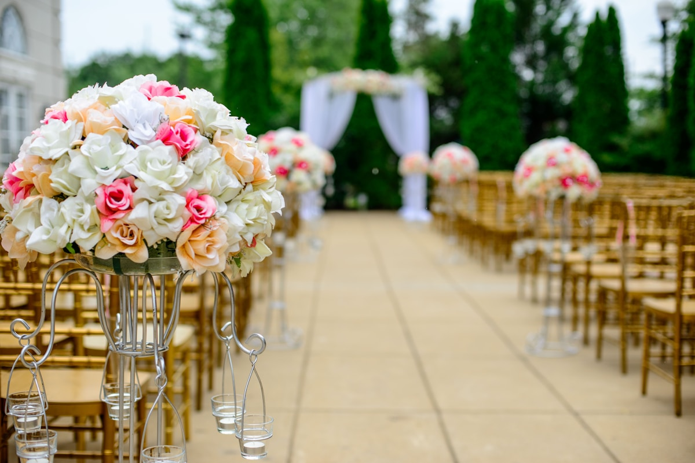
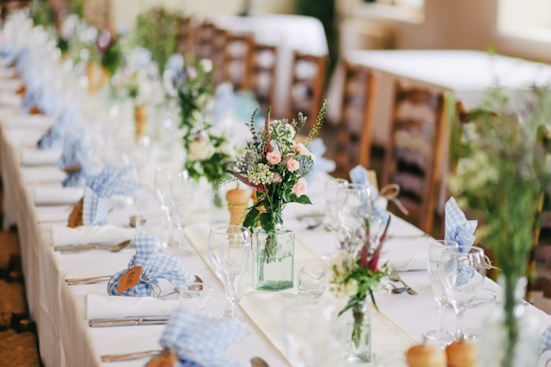
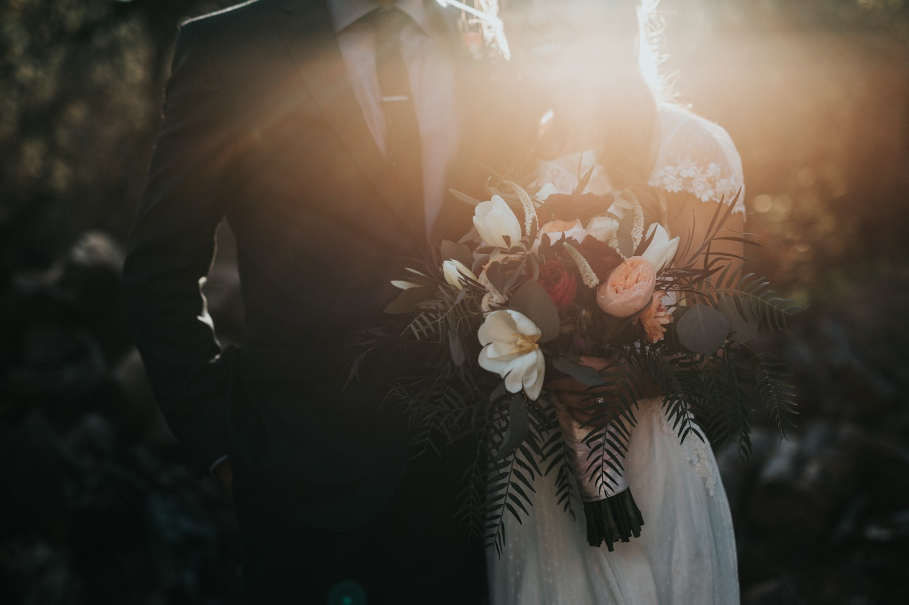
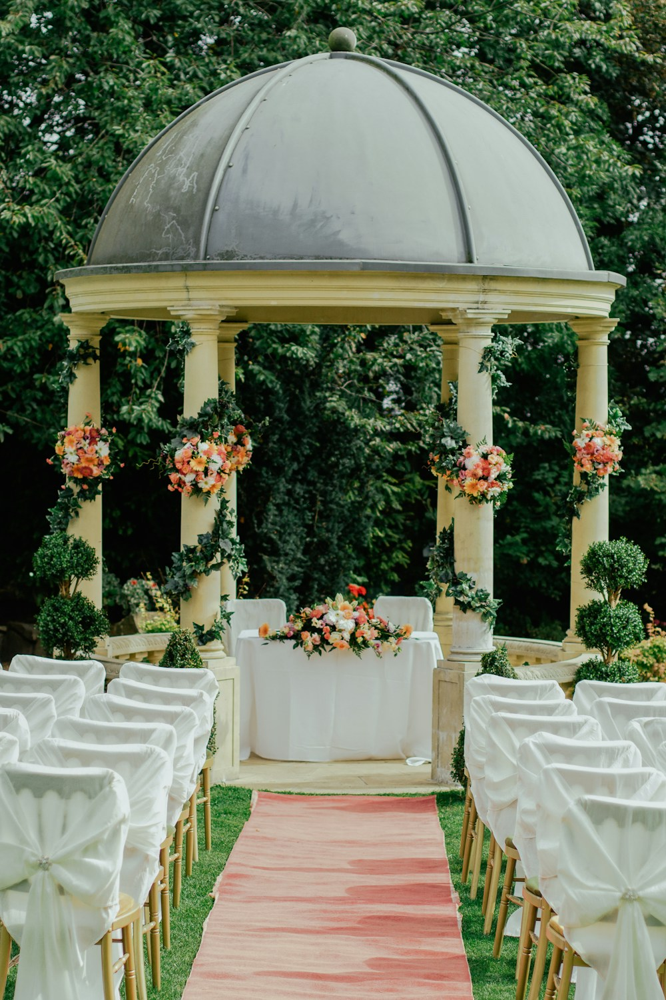
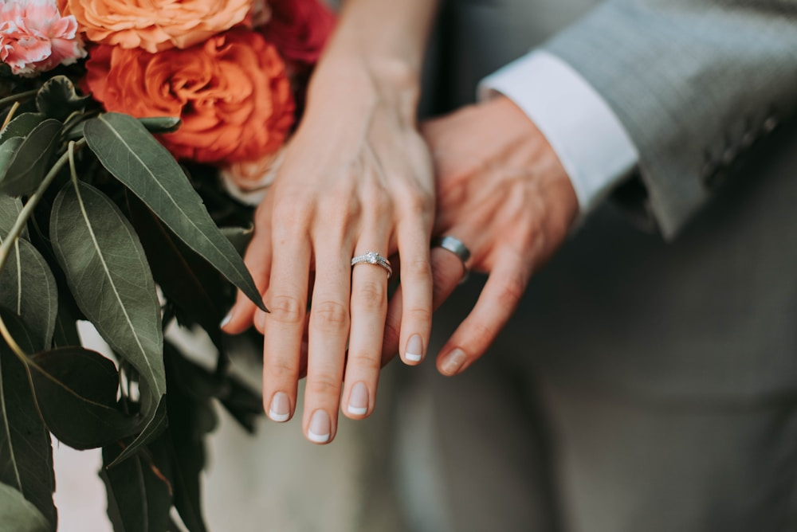
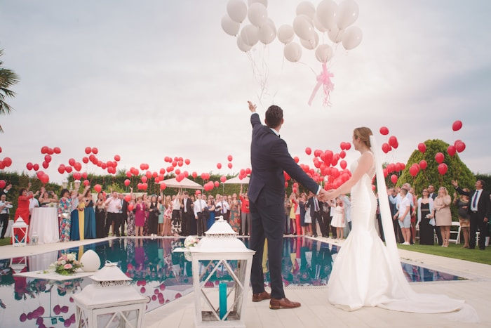
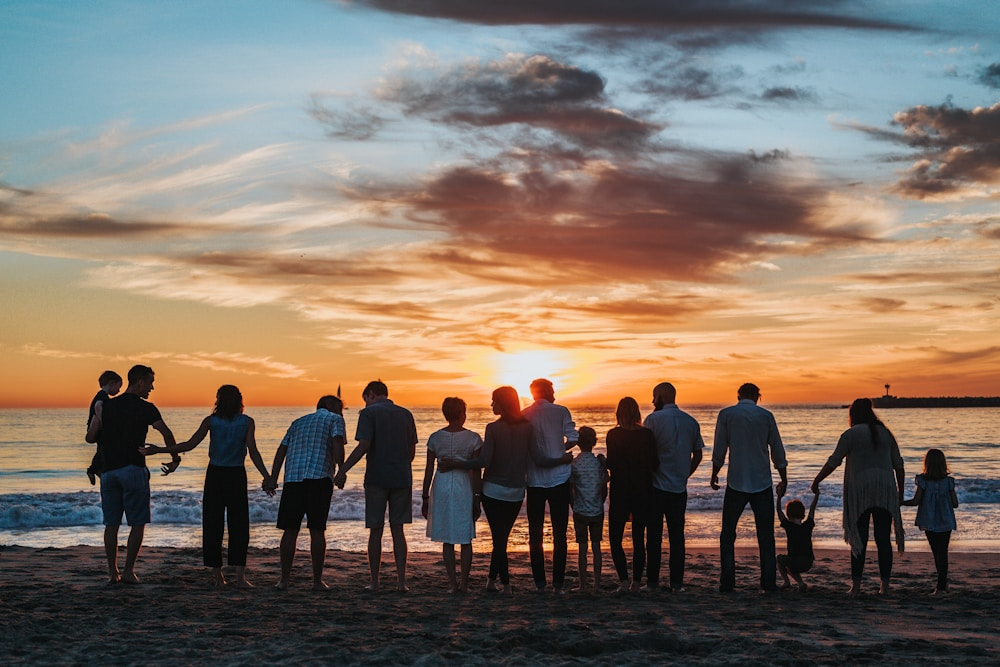
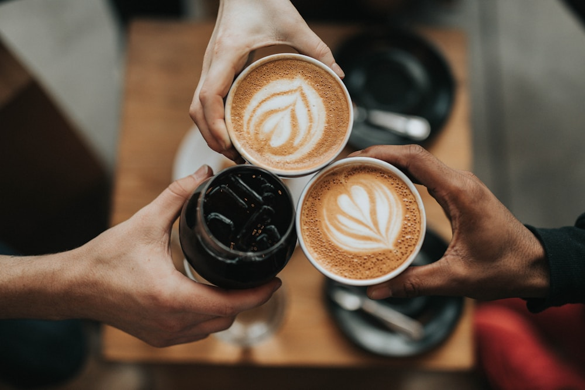
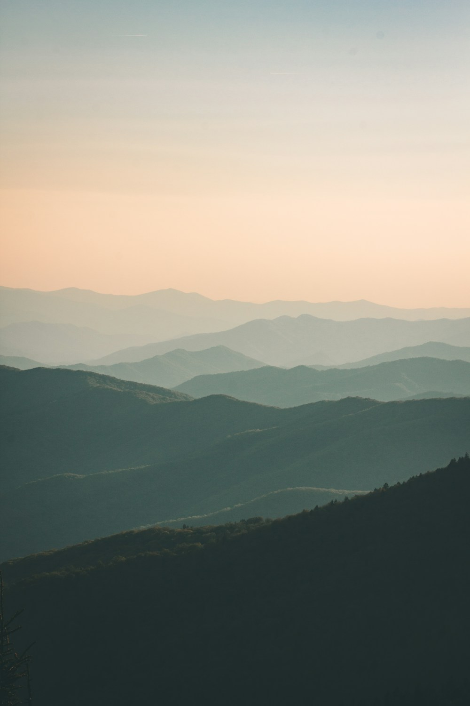

Tiempo 1
Antes
Los espacios esperan y las personas todavía no han llegado. Es la hora de los detalles.



Vuestra boda, tal como fue.
Fotografía documental para parejas que quieren vivir el día con calma. Dirección breve cuando hace falta; el resto del tiempo, presencia discreta.
Declaración
Fotografía documental y editorial para parejas que quieren vivir la boda con calma y recibir una galería natural, elegante y atemporal.
Durante
La prioridad es que viváis el día. Las imágenes nacen de lo que ocurre, no de interrumpirlo todo.
Cuando toca posar
La dirección es breve, estética y fácil de seguir. Después, vuelvo a un segundo plano.
Bodas
Sin guion ni horas de posado: lo que ocurre, en el orden en que ocurre. Detalles, familia, fiesta y silencios.
Tiempo 1
Los espacios esperan y las personas todavía no han llegado. Es la hora de los detalles.


Tiempo 2
Presencia discreta, dirección suave y atención real a lo espontáneo.


Tiempo 3
La boda también es quien está alrededor: familia, amigos, la fiesta y lo que pasa entre una cosa y otra.


Tiempo 4
Cuando toca posar, retratos breves y fáciles. Color limpio, cálido y coherente, que no dependa de una tendencia.
Retrato y editorial
Preboda, postboda, retrato y proyectos editoriales: la misma mirada, sin el reloj de una boda.
Proponer un proyectoAntes, durante y después

Antes de la boda revisamos juntos timing, luz, espacios y prioridades, para que nada esencial quede al azar.
El día, presencia discreta, dirección suave y atención a lo espontáneo.
Una galería privada con selección editorial, color coherente y descarga en alta calidad.
Agenda
España, islas y destino.
Trabajo con fechas seleccionadas por temporada para mantener una atención cercana antes, durante y después de cada boda.
Agenda limitada.
Celebraciones
Consultar disponibilidad
Colofón
Diez preguntas breves; casi todas se responden con un toque. Al final solo necesito vuestro nombre y un email o WhatsApp.
¿Preferís escribir directamente? hello@quennie.studio